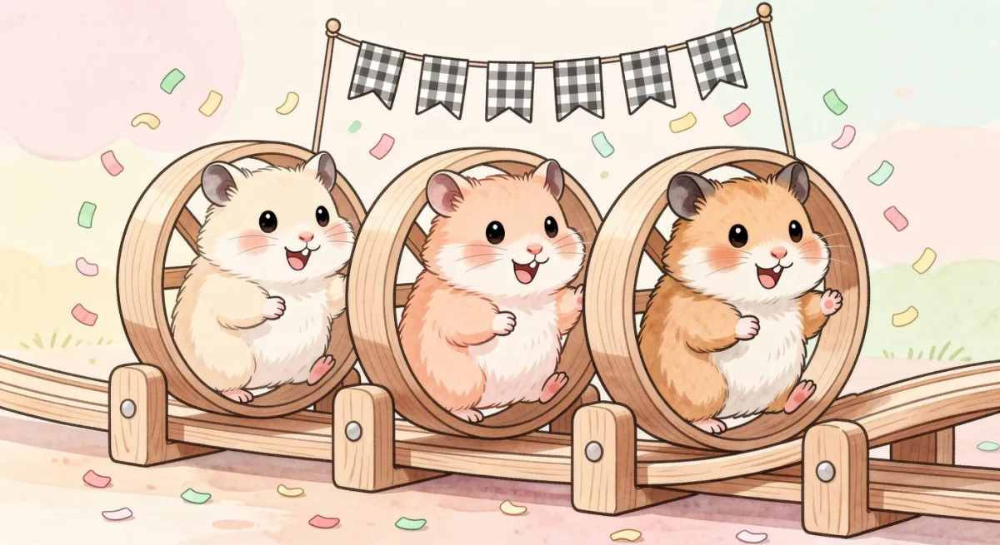
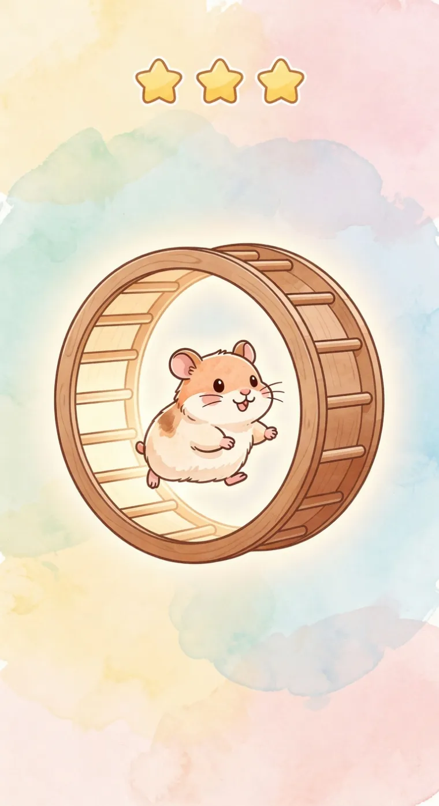
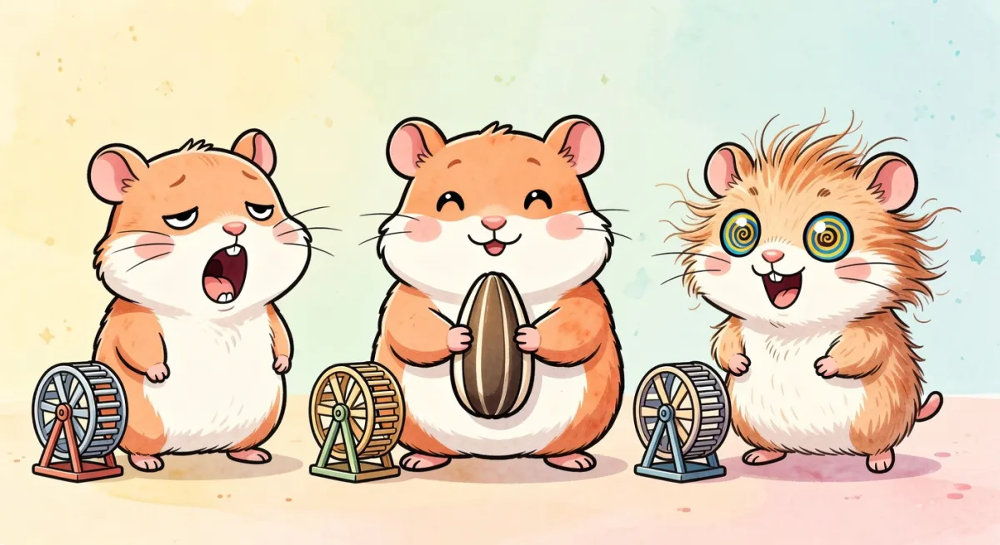
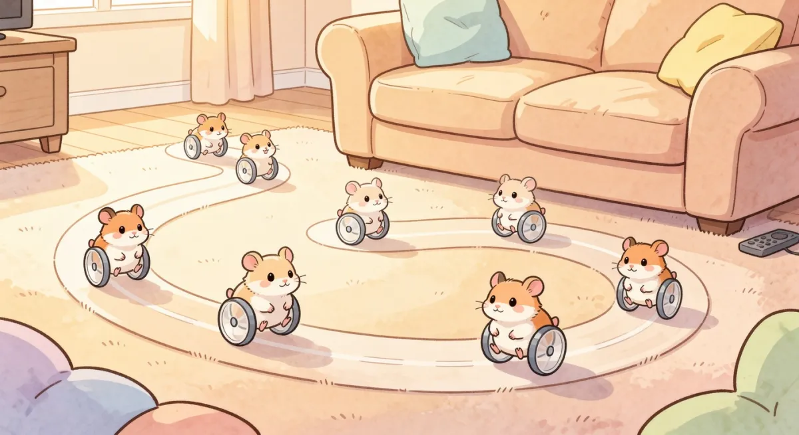
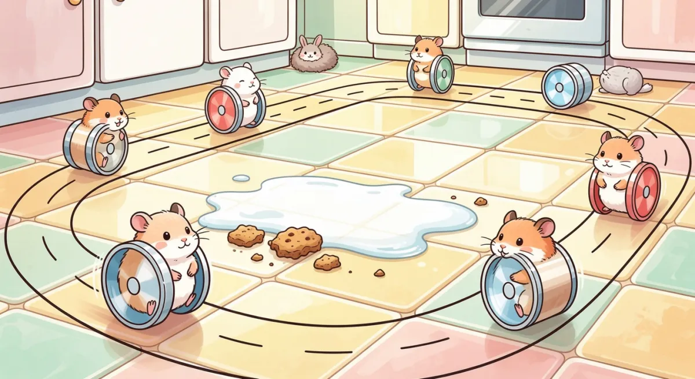
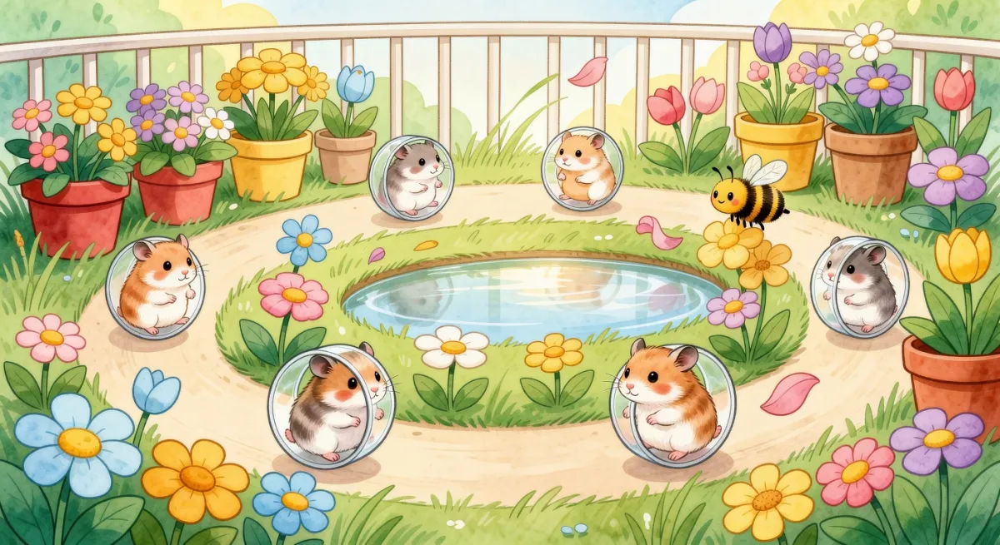

Najgłupszy, najsłodszy wyścig świata — chomiki pędzą w kółkach zamiast w autach. Gra dla maluchów 4–6 lat, na jeden paluszek.

Chomiki biegają w kółkach jak w klatce — im szybciej maluch stuka w wielkie koło na ekranie, tym szybciej jego chomik pędzi po torze. Bez czytania, bez skomplikowanych przycisków, bez płaczu po porażce. Każdy wyścig kończy się fanfarą i gwiazdkami.
Stukaj w ogromne koło albo przytrzymaj — chomik pędzi. Tor sam pokonuje zakręty, dziecko steruje tylko prędkością.
Nie ma „przegrałeś”. Każdy bieg to 1–3 gwiazdki i wielka celebracja. Zero frustracji, sama radość.
Super-ziarno, kłębek wełny, sąsiad z klatki obok który macha łapką — power-upy są tu po to, żeby było śmiesznie.

Zaprojektowane pod grube paluszki i krótką uwagę 4-latka. Koło zajmuje prawie cały ekran, każde stuknięcie daje natychmiastową, przesadzoną reakcję — chomik wymachuje łapkami, lecą gwiazdki, słychać piszczenie.
Twoimi rywalami są boty, które maluch rozpoznaje po samym sposobie biegania. Szybko stają się ulubieńcami (i obiektem komentarzy przy śniadaniu).

Biegnie, ziewa, czasem przysypia. Zawsze ostatni, zawsze uroczy.
Pulchny smakosz. Zatrzymuje się na przekąskę w najmniej odpowiednim momencie.
Oczy jak spirale, łapki w rozmyciu. Pędzi jak szalony — i tak samo szybko się gubi.
Każdy tor to inny zakątek domu, inne gagi i inne niespodzianki. Różni je klimat, nie poziom trudności — każdy maluch da radę wszędzie.

Ciepły start na dywanie, między kanapą a pilotem. Najłagodniejsze podłoże dla pierwszych wyścigów.

Rozlane mleko (ślizg!), spadające okruchy jako power-upy i przejeżdżający kurzaczek.

Trawa, doniczki i pszczoła. Czasem wiatr pchnie koło do tyłu — bardzo śmieszny efekt.
Żadnych logowań, nicków ani rozmów z obcymi. „Online” znaczy: działa w przeglądarce, bez instalacji.
Po starcie kampanii — pojedynek z „duchem” biegu taty albo kolegi z linku. Dziecko czuje, że nie gra samo, a my nie zbieramy danych.
Brak reklam, brak mikropłatności w grze, brak „przegrałeś”. Krótkie wyścigi 30–45 s pod uwagę malucha.
Licznik „ile chomików dziś przebiegło” daje poczucie wielkiej zabawy z innymi dziećmi — anonimowo.
Mechanika, tory i styl ustalone. Trzymasz w rękach pierwsze koncept-arty.
Jeden tor (Salon), jeden chomik, koło, boty i gwiazdki. Test na prawdziwym 4-latku.
Trzy tory, chomiki z osobowością, duchy z linku i głupie codzienne wyzwania.
Wybór chomika, nowe power-upy, sezonowe tory i licznik „chomików świata”.
Wsparcie idzie w grafikę, dźwięk i testy z dziećmi. Każdy próg to konkretny krok bliżej premiery.